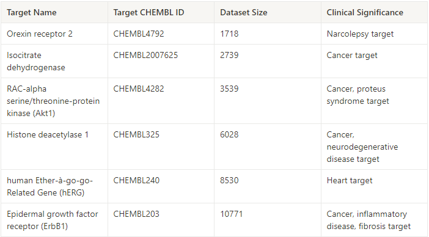
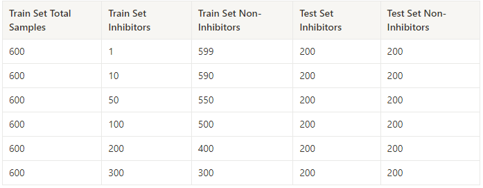
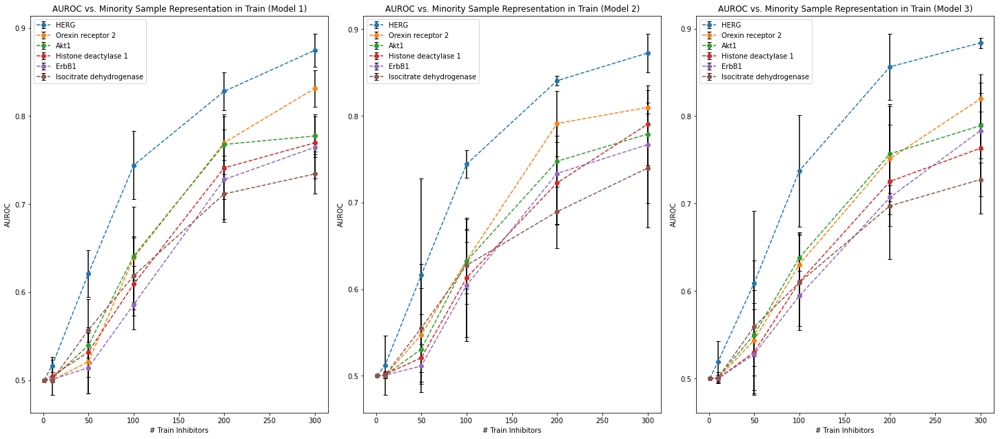

Introduction
Datasets are often unbalanced in their distribution of sample properties, causing unpredictable behavior with important test samples that have only a minority of similar samples in
the train set. This can be prevalent with molecular datasets where there is an imbalance among classes (such as between inhibitors and non-inhibitors) or a poorly represented range of target variable values.
This blog post will investigate model performance in these cases.
Data
We compile a set of human protein inhibitor datasets from the ChEMBL database. Each dataset represents one target protein and measures inhibition with the pIC50 (negative log of molar IC50)
value. Dataset specifications grouped by target protein are listed in Table 1.

Table 1. Dataset sizes and target protein information.
Molecules with pIC50 >7.0 are classified as inhibitors, and molecules with pIC50 ≤7.0 are classified as non-inhibitors.
Property Splitting and Experiment Design
This experiment centers around manipulating the representation of inhibitors and non-inhibitors in the train set. Holding the total number of training samples constant, we sample increasingly large numbers of inhibitors, making our dataset more and more diverse.
This effectively splits the dataset by its target property and allows us to observe model performance with varying levels of train set diversity. Table 2 displays the train set specifications for each level of representation.
The test set is constructed to have a 50/50 split in inhibitor/non-inhibitor representation. This balance is conserved across all train splits.

Table 2. Dataset split specifications.
Models
We perform the experiment for all datasets with three Oloren ensemble boosting models of varying architectures. Each model uses a combination of random forests trained on molecular descriptors (Morgan Fingerprints and normalized RDKit2D descriptors) and Oloren’s propietary
OlorenVec representation.
Results and Takeaways
Figure 1 displays the performance of each model tested for each dataset. Area Under the Receiver Operating Characteristic curve (AUROC) is used as the primary classification metric.

Figure 1. Plots of Model Performance
We observe that a more diverse and balanced train set universally leads to improved performance. As the number of inhibitors present in the train set rises to 300 (50%), AUROC reliably increases for each dataset and model. Note that the increases in performance level
off once the number of inhibitor samples reaches 200, or 33% of the train set, at which point further improvements are small.
The general shape of the curves (near-linear at the beginning followed by leveling off) is conserved across models and datasets. However, there are significant dataset-dependent differences.
The primary factor determining overall performance seems to be the dataset, with the relative positions of the curves conserved across models. Model performance on the hERG dataset consistently outperforms the other datasets, while
performance on the Isocitrate dehydrogenase dataset consistently underperforms. That said, besides hERG, the other datasets appear bunched together in the 0.7-0.8 AUROC range. This suggests that there are dataset inherent factors (such as the nature of the target protein) that have significant impacts on model performance.
While a dataset could always be bigger and have better target representation, there are diminishing returns in performance improvements past the 1/3 train set proportion mark for a single class in this binary classification case. Despite this, the amount of data one needs for a certain level of performance varies
widely based on the data. Comparing the hERG dataset to the Akt1 and Orexin receptor 2 datasets, one needs 100 fewer inhibitor samples to achieve approximately equal AUROC scores. Considering the variability this experiment shows, you never know how much data you’ll need until you try.